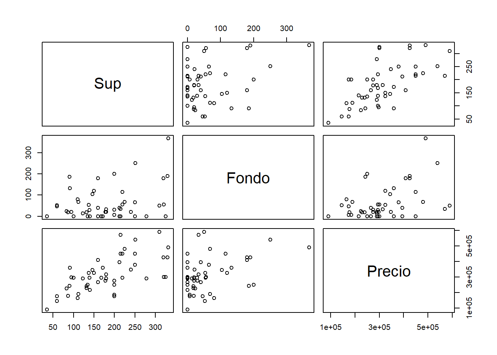

Code
head(as.data.frame(data)) Sup Fondo Precio
1 140 0 215000
2 35 0 90000
3 132 18 239000
4 212 0 394900
5 225 68 480000
6 60 46 175000En este trabajo analizamos el uso de modelos lineales y algoritmos de optimización aplicados a un conjunto de datos de propiedades inmobiliarias del barrio de Boedo, en la Ciudad de Buenos Aires. Se busca entender cómo la superficie cubierta (Sup) influye en el precio (Precio) de venta de las casas. Utilizaremos métodos de optimización como Luus-Jaakola y gradiente descendente para ajustar un modelo lineal a los datos.
Utilizaremos un subconjunto del dataset real de publicaciones digitales de inmuebles, provisto en forma libre por Properati [1].
head(as.data.frame(data)) Sup Fondo Precio
1 140 0 215000
2 35 0 90000
3 132 18 239000
4 212 0 394900
5 225 68 480000
6 60 46 175000En este caso contamos con 68 casas del barrio de Boedo, con precios en dólares que van desde los u$s 90000 hasta los u$s 600000. Se plantea un resumen de estos datos en el próximo gráfico.
pairs(data)
Puede observarse que tanto la superficie cubierta (Sup) como el fondo (Fondo) están positivamente correlacionados con el precio (Precio). Asimismo, también se aprecia una correlación positiva entre Sup y Fondo.
Un Modelo es una explicitación simplifcada de algunas relaciones potencialmente existentes entre las variables disponibles
Dividimos el trabajo con el modelo en 3 etapas principales:
Representación
Evaluación
Optimización
Proponemos un modelo lineal sencillo que relaciona el precio con la superficie cubierta:
\[ h_0 = \mu + \alpha * Sup \]
Donde: - \(h_0\) es la predicción del precio. - \(\mu\) es el término independiente. - \(\alpha\) es el coeficiente que multiplica a la superficie cubierta (Sup).
El modelo recién planteado puede pensarse como una función, que dados los parámetros θ = (µ, α), asigna un precio a una combinación cualquiera de valores de superficie. Entonces
\[ Precio^{m2} = F_{\mu, \alpha}(Sup) \]
Utilizamos el error cuadrático medio (MSE) como función de pérdida para evaluar el ajuste del modelo:
\[ \frac{1}{68} \sum_{i=1}^{68} (Precio_i - (\mu + \alpha * Sup))^2 \]
Donde: - \(n\) es el número de observaciones (en este caso, 68). - \(Precio_i\) es el precio real de la observación \(i\). - \(Sup_i\) es la superficie cubierta de la observación \(i\).
Además del MSE, existen otras funciones de pérdida que pueden ser utilizadas, cada una con sus pros y contras:
| Función de Pérdida | Pros | Contras |
|---|---|---|
| Error Absoluto Medio (MAE) | Menos sensible a valores atípicos | Puede ser menos eficiente en términos estadísticos |
| Error Cuadrático Medio (MSE) | Penaliza más los errores grandes | Sensible a valores atípicos |
| Error Logarítmico | Útil para datos con crecimiento exponencial | No está definido para valores cero o negativos |
La tarea de optimización consiste en, dadas la representación y la evaluación elegidas, definir un procedimiento efectivo que pueda hallar la determinación óptima de los parámetros del modelo, es decir, la determinación de parámetros que produzcan la menor falta de ajuste posible.
En este caso particular, el problema de optimización planteado puede resolverse analíticamente mediante mínimos cuadrados ordinarios (OLS). Sin embargo, utilizaremos métodos numéricos para ilustrar su aplicación en casos donde la solución analítica no es viable.
En modelos más complejos o no lineales, la función de pérdida puede no ser convexa o no tener una solución cerrada, lo que hace necesario el uso de métodos numéricos de optimización, no se puede resolver analíticamente.
Vamos a aplicar dos mecanismos básicos de optimización:
El método Luus-Jaakola es un algoritmo de optimización estocástica que no requiere información sobre el gradiente de la función objetivo. Consiste en:
Implementamos el método Luus-Jaakola de la siguiente manera:
# Estandarizar variables
mean_sup <- mean(data$Sup)
sd_sup <- sd(data$Sup)
mean_precio <- mean(data$Precio)
sd_precio <- sd(data$Precio)
data$Sup_scaled <- (data$Sup - mean_sup) / sd_sup
data$Precio_scaled <- (data$Precio - mean_precio) / sd_precio
# Inicialización
set.seed(123)
mu_lj <- 0
alpha_lj <- 0
best_loss <- Inf
delta <- c(1, 1) # Tamaño inicial de la región de búsqueda
n_iter <- 15
# Vectores para almacenar la evolución
mu_history <- numeric(n_iter)
alpha_history <- numeric(n_iter)
loss_history <- numeric(n_iter)
for (i in 1:n_iter) {
# Generar nuevos candidatos
mu_candidate <- mu_lj + runif(1, -delta[1], delta[1])
alpha_candidate <- alpha_lj + runif(1, -delta[2], delta[2])
# Calcular pérdida en escala estandarizada
preds_scaled <- mu_candidate + alpha_candidate * data$Sup_scaled
loss <- mean((data$Precio_scaled - preds_scaled)^2)
# Actualizar si mejora
if (loss < best_loss) {
mu_lj <- mu_candidate
alpha_lj <- alpha_candidate
best_loss <- loss
# Reducir región de búsqueda
delta <- delta * 0.95
} else {
# Aumentar región de búsqueda ligeramente
delta <- delta * 1.05
}
# Almacenar historia
mu_history[i] <- mu_lj
alpha_history[i] <- alpha_lj
loss_history[i] <- best_loss
}
# Convertir parámetros a escala original
alpha_lj <- alpha_lj * (sd_precio / sd_sup)
mu_lj <- (mu_lj * sd_precio + mean_precio) - alpha_lj * mean_sup
# Almacenar historia de parámetros en escala original para visualización
alpha_history <- alpha_history * (sd_precio / sd_sup)
mu_history <- (mu_history * sd_precio + mean_precio) - alpha_history * mean_supEmpecemos viendo la evolución de la cantidad de iteraciones en función de la cantidad de actualizaciones (modificación del óptimo hasta ese momento) a lo largo del proceso.
plot_ly(x = 1:n_iter, y = loss_history, type = 'scatter', mode = 'lines', name = 'Pérdida') %>%
layout(title = 'Evolución de la Pérdida con Luus-Jaakola',
xaxis = list(title = 'Iteración'),
yaxis = list(title = 'Pérdida'))El siguiente gráfico muestra la evolución de los mejores parámetros obtenidos a lo largo del proceso
df_params <- data.frame(
Iteración = 1:n_iter,
Mu = mu_history,
Alpha = alpha_history
)
# Gráfico de la evolución de Mu
plot_mu <- plot_ly(df_params, x = ~Iteración, y = ~Mu, type = 'scatter', mode = 'lines', name = 'Mu') %>%
layout(title = 'Evolución de Mu con Luus-Jaakola',
xaxis = list(title = 'Iteración'),
yaxis = list(title = 'Mu'))
# Gráfico de la evolución de Alpha
plot_alpha <- plot_ly(df_params, x = ~Iteración, y = ~Alpha, type = 'scatter', mode = 'lines', color= "orange", name = 'Alpha') %>%
layout(title = 'Evolución de Alpha con Luus-Jaakola',
xaxis = list(title = 'Iteración'),
yaxis = list(title = 'Alpha'))
# Mostrar los gráficos por separado
plot_muplot_alphaSe ve claramente que la evolución de cada uno de los dos parámetros converge a un valor final, a los que podemos considerar como las estimaciones. Estos valores finales son:
El método del gradiente descendente consiste en actualizar los parámetros en la dirección opuesta al gradiente de la función de pérdida. El algoritmo es el siguiente:
Inicializar los parámetros con valores aleatorios.
Calcular el gradiente de la función de pérdida con respecto a los parámetros.
Actualizar los parámetros en la dirección opuesta al gradiente. \[ \theta_{t+1} = \theta_t - \lambda \nabla L \] Donde \(\lambda\) es la tasa de aprendizaje (learning rate) y \(\nabla L(\theta_t)\) es el gradiente de la función de pérdida \(L\) con respecto a los parámetros \(\theta\) en el paso \(t\).
Repetir hasta convergencia.
Convergencia: La convergencia se produce cuando un modelo ha alcanzado un estado en el que ya no mejora significativamente su rendimiento con más iteraciones o entrenamiento.
Existen diferentes variantes del gradiente descendente: * Gradiente Descendente por Lotes (Batch Gradient Descent): Utiliza todo el conjunto de datos para calcular el gradiente en cada paso. Es estable pero puede ser lento en conjuntos de datos grandes.
Gradiente Descendente Estocástico (Stochastic Gradient Descent, SGD): Actualiza los parámetros usando una sola muestra a la vez. Es más rápido pero introduce ruido en la estimación del gradiente, lo que puede dificultar la convergencia.
Gradiente Descendente Mini-Batch: Compromiso entre los dos anteriores. Usa un subconjunto (mini-batch) de muestras para calcular el gradiente en cada paso. Balancea eficiencia computacional y estabilidad en la convergencia.
En este caso, implementaremos el gradiente descendente por lotes, utilizando todo el conjunto de datos en cada iteración.
# Estandarizar variables
mean_sup <- mean(data$Sup)
sd_sup <- sd(data$Sup)
mean_precio <- mean(data$Precio)
sd_precio <- sd(data$Precio)
data$Sup_scaled <- (data$Sup - mean_sup) / sd_sup
data$Precio_scaled <- (data$Precio - mean_precio) / sd_precio
# Inicialización de parámetros
set.seed(123)
mu_gd <- 0
alpha_gd <- 0
learning_rate <- 0.01
n_iter_gd <- 1000
# Vectores para almacenar la evolución
mu_history_gd <- numeric(n_iter_gd)
alpha_history_gd <- numeric(n_iter_gd)
loss_history_gd <- numeric(n_iter_gd)
for (i in 1:n_iter_gd) {
# Predicciones usando variables escaladas
preds_scaled <- mu_gd + alpha_gd * data$Sup_scaled
errors <- preds_scaled - data$Precio_scaled
# Calcular gradientes
mu_grad <- (2 / nrow(data)) * sum(errors)
alpha_grad <- (2 / nrow(data)) * sum(errors * data$Sup_scaled)
# Actualizar parámetros
mu_gd <- mu_gd - learning_rate * mu_grad
alpha_gd <- alpha_gd - learning_rate * alpha_grad
# Calcular pérdida
loss <- mean(errors^2)
# Almacenar historia
mu_history_gd[i] <- mu_gd
alpha_history_gd[i] <- alpha_gd
loss_history_gd[i] <- loss
}
# Convertir parámetros a escala original
alpha_gd <- alpha_gd * (sd_precio / sd_sup)
mu_gd <- (mu_gd * sd_precio + mean_precio) - alpha_gd * mean_sup
# Almacenar historia de parámetros en escala original para visualización
alpha_history_gd <- alpha_history_gd * (sd_precio / sd_sup)
intercept_history_gd <- (mu_history_gd * sd_precio + mean_precio) - alpha_history_gd * mean_supVisualizamos la evolución de la pérdida:
# Añadir puntos a cada iteración
iterations <- 1:n_iter_gd
plot_ly(x = iterations, y = loss_history_gd, type = 'scatter', mode = 'lines+markers', name = 'Pérdida') %>%
layout(title = 'Evolución de la Pérdida con Gradiente Descendente',
xaxis = list(title = 'Iteración'),
yaxis = list(title = 'Pérdida'),
annotations = list(
x = iterations[which.min(loss_history_gd)],
y = min(loss_history_gd),
text = paste('Mínima pérdida:', round(min(loss_history_gd), 2)),
showarrow = TRUE,
arrowhead = 7,
ax = -40,
ay = -40
))En el gráfico anterior, hemos agregado puntos en cada paso (iteración) para visualizar mejor cómo disminuye la pérdida a lo largo de las iteraciones. También hemos incluido una anotación que indica la pérdida mínima alcanzada.
Visualizamos la evolución de los parámetros:
df_params_gd <- data.frame(
Iteración = iterations,
Mu = mu_history_gd,
Alpha = alpha_history_gd
)
# Gráfico de Mu
plot_mu <- plot_ly(df_params_gd, x = ~Iteración, y = ~Mu, type = 'scatter', mode = 'lines+markers', name = 'Mu') %>%
layout(title = 'Evolución de Mu con Gradiente Descendente',
xaxis = list(title = 'Iteración'),
yaxis = list(title = 'Mu'))
# Gráfico de Alpha
plot_alpha <- plot_ly(df_params_gd, x = ~Iteración, y = ~Alpha, type = 'scatter', mode = 'lines+markers', name = 'Alpha') %>%
layout(title = 'Evolución de Alpha con Gradiente Descendente',
xaxis = list(title = 'Iteración'),
yaxis = list(title = 'Alpha'))
subplot(plot_mu, plot_alpha, nrows = 2, shareX = TRUE, titleX = TRUE, titleY = TRUE) %>%
layout(title = 'Evolución de los Parámetros con Gradiente Descendente')En los gráficos anteriores, hemos colocado los gráficos de los parámetros \(\mu\) y \(\alpha\) uno debajo del otro para facilitar su visualización individual y apreciar cómo evolucionan a lo largo de las iteraciones.
Para visualizar la trayectoria del gradiente descendente en el espacio de parámetros, podemos graficar la función de pérdida en función de los parámetros y superponer los pasos del algoritmo.
Primero, generamos una cuadrícula de valores de \(\mu\) y \(\alpha\) y calculamos la pérdida asociada:
# Crear una cuadrícula de valores para mu y alpha
mu_seq <- seq(min(mu_history_gd), max(mu_history_gd), length.out = 100)
alpha_seq <- seq(min(alpha_history_gd), max(alpha_history_gd), length.out = 100)
# Crear una matriz para almacenar la pérdida
loss_grid <- matrix(0, nrow = length(mu_seq), ncol = length(alpha_seq))
for (i in 1:length(mu_seq)) {
for (j in 1:length(alpha_seq)) {
preds <- mu_seq[i] + alpha_seq[j] * data$Sup
loss_grid[i, j] <- mean((data$Precio - preds)^2)
}
}
# Transponer la matriz para que coincida con los ejes
loss_grid <- t(loss_grid)Los valores finales obtenidos son:
Comparando los resultados obtenidos con ambos métodos, observamos que convergen a valores similares. Para validar el modelo, podemos comparar las predicciones con los valores reales.
# Predicciones con los parámetros finales
preds_lj <- mu_lj + alpha_lj * data$Sup
preds_gd <- mu_gd + alpha_gd * data$Sup
# Gráfico de comparación
plot_ly(data, x = ~Sup, y = ~Precio, type = 'scatter', mode = 'markers', name = 'Datos Reales') %>%
add_trace(x = ~Sup, y = preds_lj, mode = 'lines', name = 'Luus-Jaakola') %>%
add_trace(x = ~Sup, y = preds_gd, mode = 'lines', name = 'Gradiente Descendente') %>%
layout(title = 'Ajuste del Modelo Lineal',
xaxis = list(title = 'Superficie Cubierta (Sup)'),
yaxis = list(title = 'Precio'))Podemos observar que el modelo lineal ajusta razonablemente bien los datos, capturando la tendencia general de incremento del precio con la superficie cubierta.
Para validar y contrastar nuestros resultados, utilizaremos la función nativa lm() de R para ajustar un modelo lineal y comparar los coeficientes obtenidos.
La función lm() en R realiza un ajuste de mínimos cuadrados ordinarios (OLS), proporcionando una solución analítica al problema de regresión lineal.
# Ajuste del modelo lineal utilizando lm()
modelo_lm <- lm(Precio ~ Sup, data = data)
summary(modelo_lm)
Call:
lm(formula = Precio ~ Sup, data = data)
Residuals:
Min 1Q Median 3Q Max
-217225 -49083 603 75104 190740
Coefficients:
Estimate Std. Error t value Pr(>|t|)
(Intercept) 109601.8 32593.3 3.363 0.00129 **
Sup 1254.2 160.6 7.808 0.0000000000583 ***
---
Signif. codes: 0 '***' 0.001 '**' 0.01 '*' 0.05 '.' 0.1 ' ' 1
Residual standard error: 94100 on 66 degrees of freedom
Multiple R-squared: 0.4802, Adjusted R-squared: 0.4723
F-statistic: 60.97 on 1 and 66 DF, p-value: 0.00000000005832El resumen del modelo proporciona los coeficientes estimados:
Los valores son:
# Obtener los coeficientes del modelo lm
mu_lm <- modelo_lm$coefficients[1]
alpha_lm <- modelo_lm$coefficients[2]
# Crear un data frame con los valores
coeficientes_lm <- data.frame(
Parámetro = c("Mu", "Alpha"),
Valor = c(round(mu_lm, 2), round(alpha_lm, 2))
)
# Mostrar la tabla usando knitr::kable
library(knitr)
kable(coeficientes_lm, caption = "Valores obtenidos con lm()")| Parámetro | Valor | |
|---|---|---|
| (Intercept) | Mu | 109601.84 |
| Sup | Alpha | 1254.23 |
Para visualizar el ajuste de los modelos, graficamos las predicciones obtenidas con cada método junto con los datos reales:
# Predicciones con los parámetros finales
preds_lj <- mu_lj + alpha_lj * data$Sup
preds_gd <- mu_gd + alpha_gd * data$Sup
preds_lm <- predict(modelo_lm, data)
# Gráfico de comparación
plot_ly(data, x = ~Sup, y = ~Precio, type = 'scatter', mode = 'markers', name = 'Datos Reales') %>%
add_trace(x = ~Sup, y = preds_lj, mode = 'lines', name = 'Luus-Jaakola', line = list(color = 'red')) %>%
add_trace(x = ~Sup, y = preds_gd, mode = 'lines', name = 'Gradiente Descendente', line = list(color = 'green')) %>%
add_trace(x = ~Sup, y = preds_lm, mode = 'lines', name = 'lm()', line = list(color = 'blue', dash = 'dash')) %>%
layout(title = 'Ajuste del Modelo Lineal con Diferentes Métodos',
xaxis = list(title = 'Superficie Cubierta (Sup)'),
yaxis = list(title = 'Precio'),
legend = list(x = 0.1, y = 0.9))
Como las tres líneas prácticamente se superponen, indican que todos los métodos proporcionan un ajuste muy similar. Destacamos que el método LM() y la optimización por gradiente descendente llegaron a exactamente el mismo resultado.
| Método | Mu | Alpha | MSE |
|---|---|---|---|
| Luus-Jaakola | 137722.9 | 1159.35 | 8740642890 |
| Gradiente Descendente | 109601.8 | 1254.23 | 8593462003 |
| lm() | 109601.8 | 1254.23 | 8593462003 |
Podemos observar que los valores obtenidos con nuestros métodos de optimización numérica son muy cercanos a los obtenidos con la solución analítica de lm(), lo que valida la eficacia de los algoritmos implementados.
En este trabajo, hemos aplicado modelos lineales y algoritmos de optimización para predecir el precio de venta de casas en el barrio de Boedo, en base a la superficie cubierta.
Utilizamos dos métodos de optimización: Luus-Jaakola y gradiente descendente. Ambos métodos convergieron a soluciones similares, confirmando la efectividad de estos algoritmos en la optimización de funciones convexas.
El modelo lineal simple utilizado demostró ser adecuado para capturar la relación entre la superficie cubierta y el precio. Sin embargo, para mejorar el modelo, podríamos considerar incluir otras variables, como el fondo, la cantidad de habitaciones, o características del barrio.
Bibliografia
[1] Properati, Sitio Web de Properati